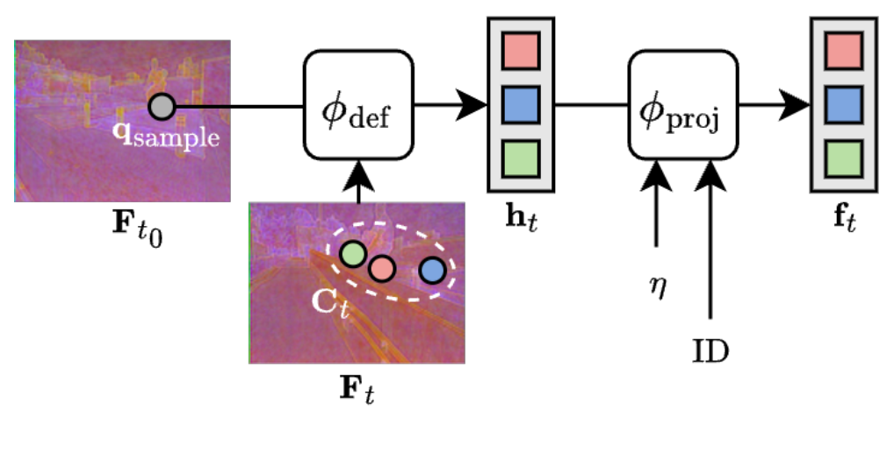

Track-On-R / Verifier 深读：合成数据训练的点跟踪器一进真实视频就掉点，自训练又被"逐帧波动的 teacher"反噬——能不能学一个"逐帧判断该信谁"的验证器？
导读。长时点跟踪（point tracking / TAP）的模型几乎清一色在合成数据（TAP-Vid Kubric 等）上训练——因为给真实视频做逐帧、像素级的长程轨迹标注代价高到不现实。结果是一道顽固的 sim-to-real 域差：真实视频里的外观统计、非刚性运动、遮挡模式、光照与传感器噪声，会让这些模型在长序列上越跑越不准。自训练（拿预训练 tracker 的预测当伪标签去真实视频上微调）是一条公认的出路，但它有个软肋：伪标签的质量取决于 teacher 的可靠性，而可靠性是逐帧、逐场景波动的——有的 tracker 抗快速运动却在低纹理处漂移，有的扛遮挡却爱发生身份切换。固定阈值或全局置信度无法调和这些异质的误差模式，反而会在微调里把系统性错误放大。本文的核心张力就在这：真实世界的点跟踪训练，瓶颈不是"再造一个更强的 tracker"，而是"逐帧判断该信谁"——可靠性估计。作者的答案是一个叫 verifier 的 meta-model：它不直接预测坐标，而是给定 query 点与多个 off-the-shelf teacher 的候选轨迹，逐帧打出可靠性分数、挑出最可信的那条，拼成干净的伪标签。verifier 全程只在合成数据上用"故意扰动的候选"训练（无需任何真实标注），却学到了能跨域迁移的一致性线索。把它用来微调 Track-On2，得到 Track-On-R：EgoPoints、RoboTAP、Kinetics、DAVIS 四个真实基准全 SOTA，EgoPoints 的 $\delta^x_{avg}$ 从 61.7 抬到 67.3，且用的数据比此前自训练方法更少。

核心问题：为什么"再强的单 teacher"也救不了真实世界微调？#
先把动机讲透，再谈机制。点跟踪要在长视频里维持对"任意一个物理点"的细粒度对应，穿过运动、遮挡、再出现。短程对应光流就能解决，但长时程（几十到上千帧）一直是难点。问题在于：
- 训练几乎全在合成数据上。给真实视频做密集长程轨迹标注代价过高，于是 TAPIR、CoTracker、Track-On 系列都在 Kubric 这类合成集训练。模型默认"合成→真实"能泛化，但纹理、光照、运动、遮挡分布一变，性能就退化。
- 自训练的伪标签不是均匀可靠的。朴素做法（论文记作 naïve self-training）是：采一段真实视频 $V\sim\mathcal{D}_{real}$，从 $M$ 个预训练模型里随机挑一个 teacher $\Phi^{(m)}$，让它对 query 点 $q_{t_0}$ 生成伪标签 $\tilde{Y}=\{(\hat{p}_t,\hat{v}_t)\}_{t=1}^{T}$ 当监督。可单个 teacher 很少能在整段视频里保持均匀可靠——准确度逐帧抖动，时好时坏。
- 不同 teacher 的误差只是"弱相关"，不是"互补"。直接从这些预测里采样、或对它们做平均，倾向于放大噪声与漂移，反而抵消了自训练的收益。固定启发式或全局置信阈值，调和不了这些异质误差。
问：那"逐帧挑一个最准的 teacher"到底有多大空间？这值得专门学一个模型吗？
引导：先别急着造模型——先做一个oracle 实验把"上限"量出来。oracle 在每一帧都偷看 ground truth，选离 GT 最近的那个 teacher 预测。如果 oracle 跟"任何单 teacher / 随机选"之间差距很小，那这条路不值得走；如果差距巨大，说明"逐帧选择"这个动作本身藏着大量未被利用的 headroom。
答：论文 Fig.2(a) 给出了答案——在 4 个真实数据集上，6 个现成 teacher（彩色圈）全都明显低于 oracle（菱形），而"随机选 teacher"（黑色横线）更低。这个差距在所有数据集上都一致存在，在挑战性最强的第一人称视频 EgoPoints 上尤其夸张。结论：最好的 teacher 是逐帧、逐场景变化的，静态或随机选择都次优——"逐帧选择"确实值得专门学一个模型来逼近。
Takeaway：本文不是要发明新的 tracker 架构，而是把问题重新定义为可靠性估计——学一个 meta-model，逼近那个"逐帧选最准 teacher"的 oracle，但不偷看 GT。这是全文机制的起点。
把这条思路压成一句话：verifier 要做的，就是在没有真实标注的前提下，逐帧近似 oracle 的选择。它怎么在没有 GT 时判断"谁最准"？靠的是外观一致性——一个候选点周围的局部视觉证据，是否还像在延续 query 点最初的外观与运动。这就是后面 §method 的全部机制核心。
贡献拆解：三件事，且都建立在"不碰 teacher/student 结构"之上#
作者自陈三点贡献，这里逐条标出"它解决上面哪个痛点"，并把作者主张与读者可推断的边界分开：
- verifier（一个可靠性打分的 meta-model）。给多 teacher 的逐帧预测打分、选可靠的——既能在训练时当"监督选择器"挑伪标签，也能在推理时当"即插即用集成模块"。对应痛点②③：把"该信谁"显式建模。
- verifier-guided pseudo-labeling 框架。用 verifier 生成的伪标签，把真实视频上的微调规模化，同时绕开朴素伪标签的失败模式（噪声放大、漂移、坍缩）。对应痛点①：把合成→真实的域差用"干净伪标签"补上。
- 系统的实验与消融：四个真实点跟踪基准上 SOTA，且强调数据效率（用更少真实视频）。
读者侧边界（非作者主张）
verifier 是个旁路裁判：它本身不预测坐标，最终轨迹仍来自 teacher 候选。因此（作者在 §limitation 也承认）verifier 的上限被 teacher 池的质量锁死——再聪明的裁判也只能在给定的候选里选。这是它"轻、可迁移、即插即用"的代价。本文 student/base 模型固定为 Track-On2，teacher 池固定为 6 个现成模型。
数据：verifier 用合成集训练，伪标签在"野生"真实视频上生成，最后在四个公开基准上评#
这套方法横跨三类数据，分工要分清楚：
- verifier 训练（合成，带 GT）：用 K-EPIC——11K 段、每段 24 帧的合成视频，物体与 TAP-Vid Kubric 类似。verifier 在这里学"怎么从局部外观一致性判断候选可靠性"，监督信号来自候选到 GT 的距离（式10）。关键：训练全程只用合成标注，不碰任何真实标注。
- 真实世界微调（无标注，野生视频）：$\mathcal{D}_{real}$ 由现成的物体跟踪/分割数据集拼成——TAO、OVIS、VSPW，只保留长度 > 48 帧的视频、不做额外筛选，得到 4864 段真实序列（实际微调用其中 8K 视频的过滤集合；论文此处给出的是过滤后的序列数）。这些视频没有任何轨迹标注，伪标签全由 verifier + teacher 池生成。
- 评测（四个公开真实基准）：
· TAP-Vid DAVIS：30 段真实视频；
· TAP-Vid Kinetics：Kinetics-700-2020 验证集 1000 段；
· RoboTAP：265 段机器人序列，平均 > 250 帧；
· EgoPoints：第一人称长视频，长达数千帧。
指标：TAP-Vid 子集与 RoboTAP 用三个标准指标——OA（Occlusion Accuracy，可见性预测准确率）；$\delta^x_{avg}$（可见点落在 1/2/4/8/16 像素阈值内的平均比例）；AJ（Average Jaccard，定位与可见性的联合度量）。EgoPoints 按官方协议只报 $\delta^x_{avg}$ 与 OA。评测遵循标准 TAP-Vid 协议，视频降到 256×256（EgoPoints 例外），用 queried-first 因果设定（取轨迹首个可见点当 query，模型只看后续帧）。
Pipeline：从"野生视频"到"干净伪标签"再到"微调好的 Track-On-R"#
把整条链路按数据流走一遍（对照图 1 右 + 图 3）：
- 采 query 点。对每段野生视频 $V\sim\mathcal{D}_{real}$，按外观 + 运动两类线索采 query：2/3 来自 SIFT 检测点，1/3 来自"运动显著区"（灰度帧差 + 轻度空间平滑）。query 只从视频前半段、4 个均匀间隔帧（如第 1、5……帧）采。
- teacher 池生成候选。每个 query 被 M=6 个现成 teacher 各跟一遍：Track-On2、BootsTAPIR、BootsTAPNext、Anthro-LocoTrack、AllTracker、CoTracker3（window 变体）。于是同一目标得到 $C\in\mathbb{R}^{L\times M\times 2}$ 条候选轨迹。
- verifier 逐帧裁决。verifier 对每帧每条候选打可靠性分 $\hat{s}_t\in\mathbb{R}^{M}$，每帧选 $\arg\max_m \hat{s}_t^{(m)}$ 对应的预测当伪标签坐标；可见性用 teacher 预测的多数投票定。逐帧拼起来就是一条精修伪标签轨迹。
- 微调 student。以 Track-On2（在 Kubric 上预训练）为 base，用这些伪标签在 $\mathcal{D}_{real}$ 上微调；实操里同时混入合成集 $\mathcal{D}_{syn}$（带 GT），并按 schedule 逐步抬高真实样本的损失权重、压低合成样本——得到 Track-On-R。
一处易混点
verifier 在训练时吃的是"对 GT 轨迹做随机扰动"造出的候选（模拟 drift/遮挡/jitter），在推理/微调时吃的是"6 个真 teacher"的候选。两边输入形态一致（都是一束候选轨迹），所以合成训练的 verifier 能直接迁移去裁决真实 teacher——这正是"无需真实标注"的来源。
方法核心：verifier 怎样"不偷看 GT"也能逐帧选出最可靠的候选？#
用 kexue:su 的姿态拆这个机制——先讲"为什么需要"，每一步显式标出假设，并从两条独立路径（top-down 直觉 + bottom-up 算法）走到同一结论。
① 问题形式化：verifier 是 meta-model，输出"逐帧候选可靠性分布"
点跟踪本身是 $\{(\hat{p}_t,\hat{v}_t)\}_{t=t_0+1}^{T}=\Phi(V,q_{t_0})$：给定视频和 $t_0$ 时刻的 query 点，预测后续每帧的 2D 坐标 $\hat{p}_t$ 与可见性 $\hat{v}_t$。verifier 则换了个目标——它不预测坐标，而是对一束候选打分：
公式读法：$L=T-t_0$ 是轨迹长度，$C$ 的每个元素是"候选 $m$ 在帧 $t$ 的 2D 位置"。verifier 的全部产出，就是这套"逐帧、跨候选"的概率分布——逼近 oracle 的逐帧选择。
② 局部特征提取：把"该信谁"翻译成"谁的局部外观还像 query"
动机：在没有 GT 时，唯一能判断候选可靠性的客观证据，是候选点周围的局部视觉外观，是否还延续着 query 点最初的外观。所以第一步是把"图像里这些 2D 位置附近的区域"转成可直接比较的紧凑描述子。
用冻结的 CoTracker3 CNN encoder $\phi_{enc}$ 对每帧算稠密特征 $F_t\in\mathbb{R}^{H''\times W''\times D}$（式3）。query 的参考嵌入由在首个可见帧 $t_0$ 处对 $q_{t_0}$ 双线性采样得到（式4）。再用可变形注意力（deformable attention）在 query 与候选两处聚合局部上下文：
再补两类嵌入修正"纯视觉特征缺空间上下文"的缺陷：对位移向量 $\Delta_t=C_t-q_{t_0}$ 加正弦位置嵌入 $\eta(\cdot)$，再拼一个可学的身份嵌入区分 query（$\text{ID}_0$）与候选（$\text{ID}_1$），过投影 $\phi_{proj}$ 对齐到模型维度，得到 $f_{t_0}^{q}$（式7）与候选特征 $f_t$（式8）。query 特征沿时间复制成 $f^{q}\in\mathbb{R}^{L\times D}$，候选特征堆成 $f\in\mathbb{R}^{L\times M\times D}$。
{kind=link}

③ Candidate Transformer：受限 cross-attn（看候选）+ 时序 self-attn（看上下文）
有了 query 描述子 $f^{q}$ 与候选描述子 $f$，Candidate Transformer 把它们解码成"带时序信息的可靠性嵌入"。它在标准 decoder 上做两处改动，各对应一个动机：
- 受限 cross-attention（沿候选维 $M$）：每帧的 query 嵌入 $f_t^{q}$ 只注意它自己那一帧的候选 $f_t\in\mathbb{R}^{M\times D}$。此时把时间维 $L$ 当 batch 轴，每帧独立算注意力。动机：让 query 在该帧内"横向比较"所有候选，识别出最一致的运动假设。
- 时序 self-attention（沿时间维 $L$）：再把各帧的 query 嵌入沿时间串起来。动机：消歧——某帧若模棱两可，邻近帧的高置信预测能反过来修正它的可靠性估计。注意此处不加 attention mask，遮挡帧的候选也照样参与（遮挡信息本身也是线索）。
解码后，对每帧算 query 特征与候选特征的温度缩放 cosine softmax：
公式读法：分子是"候选外观 vs query 外观"的相似度，$\tau$ 小（0.1）让分布更尖——倾向于把概率压到"最像 query"的那个候选上，逼近 hard 选择。
④ 训练目标：用"候选到 GT 距离的负 softmax"做软对比监督
动机：要教 verifier"离 GT 越近的候选越该得高分"。在合成集上有 GT 轨迹 $p\in\mathbb{R}^{L\times 2}$ 与可见性 $v\in\{0,1\}^{L}$，定义逐帧目标可靠性分布为候选到 GT 的负距离的 softmax：
预测分布 $\hat{s}_t$ 用交叉熵对齐目标 $s_t$，并用可见性掩码掉遮挡帧：
问：为什么这个"只在合成数据上学的软对比目标"，能迁移去裁决真实视频里的真 teacher？
引导：两条独立验证。路径 A（极限化简）——当 $\tau,\tau_s\to 0$，式9/式10 都退化成 hard argmax，verifier 学的正是"逐帧选离 GT 最近的候选"，这就是 §motivation 那个 oracle 选择器的可学近似。路径 B（迁移机理）——verifier 的判据是"候选局部外观是否延续 query 外观"，这是个域无关的一致性线索（合成与真实视频里，"同一个点的外观应当连续"这条物理先验都成立）；而训练用的扰动（drift/jump/occlusion/re-appearance）刻意模拟了真实推理时的误差形态，让 verifier 见过"长得像真实失败"的负样本。
答：两条路殊途同归——verifier 不是在记"合成数据长什么样"，而是在学"一致性该怎么判"。所以它换到真实 teacher 候选上仍然成立。论文用两组实验把这个推断坐实（见 §experiments）：单独当 inference-ensemble 就超过最强单 teacher（图4），拿去微调则四基准 SOTA（表1）。
Takeaway：verifier ≈ "可学的、无 GT 的 oracle 逐帧选择器"，其可迁移性来自"判据是外观一致性而非域特定外观" + "训练负样本刻意模拟真实失败"。这是全文最该记住的一句。

训练配置：verifier 在合成集上学，Track-On-R 在"合成+真实"混合 schedule 下微调#
- verifier 训练：合成集 K-EPIC（11K 段 × 24 帧）。候选由"对 GT 轨迹 $p\in\mathbb{R}^{L\times 2}$ 加随机扰动"生成 $M$ 条（典型 6–12 条），扰动模拟 drift/遮挡/jitter（细节见论文补充材料）。监督用式10 的软目标 + 交叉熵（遮挡帧掩码）。
- Track-On-R 微调：base = Track-On2（Kubric 预训练）。同时用 $\mathcal{D}_{syn}$（带 GT）与 $\mathcal{D}_{real}$（verifier 伪标签），按 schedule 逐步抬高真实样本损失权重、压低合成样本。论文明确：该 schedule 比"只用 $\mathcal{D}_{real}$"略好，但"只用 $\mathcal{D}_{real}$"已是有竞争力的结果（消融见 §ablations 表3）。
- 温度等超参：式9 的 $\tau=0.1$，式10 的 $\tau_s=0.3$。
- 算力/GPU-hours：论文未说明具体 GPU 型号、卡数与训练时长（致谢仅提到由 EuroHPC 的 Leonardo Booster 提供算力支持）。因此本页不给 GPU-hours 估算。
实验结果：两条独立路径——推理集成（图4）+ 微调 SOTA（表1）#
路径 A：verifier 单独当推理集成，就超过最强单 teacher
先不微调，只把 verifier 当"即插即用的推理集成模块"，逐帧从 6 个 teacher 里选。论文 Fig.4 用各 teacher 官方 checkpoint 复现的 $\delta^x_{avg}$ 比较 verifier、随机基线与各单 teacher。下表把图 4 的数值转写出来（数值读自论文 Fig.4 的柱状标注；同一图同时画了多个数据集，此处按数据集分列）：
| 方法 | DAVIS | Kinetics | RoboTAP | EgoPoints |
|---|---|---|---|---|
| Track-On2 | 79.9 | 69.3 | 80.5 | 61.7 |
| BootsTAPNext | 80.9 | — | — | 33.6 |
| BootsTAPIR | 78.0 | 68.4 | — | 55.7 |
| CoTracker3 | 78.9 / 79.0 | 68.2 | 77.3 | 54.0 |
| Anthro-LocoTrack | 77.0 | 68.0 | — | 61.1 |
| AllTracker | 76.8 | — | — | 62.0 |
| Random（随机选 teacher） | 75.1 / 75.3 | 65.6 | 74.6 | — |
| Verifier（本文） | 81.2 | 71.7 | 83.5 | 66.7 |
说明：图 4 是密集叠放的柱状图，部分单 teacher 在某些数据集上的精确数值未在图中标注（标"—"）；verifier 与 Random、以及关键 teacher 的数值清晰可读，已如实转写。趋势无歧义——verifier 一致超过最强单 teacher 与随机基线，在 EgoPoints 这种可靠性剧烈波动的场景增益最大。
路径 B：verifier 引导微调，得到 Track-On-R，四基准全 SOTA
论文表 1 是主结果，完整转写如下（AJ / $\delta^x_{avg}$ / OA，越高越好；有官方报告值则用之，否则用作者复现 checkpoint；"—"为缺失 checkpoint）：
| Model | EgoPoints | RoboTAP | Kinetics | DAVIS | |||||||
|---|---|---|---|---|---|---|---|---|---|---|---|
| $\delta^x_{avg}$ | OA | AJ | $\delta^x_{avg}$ | OA | AJ | $\delta^x_{avg}$ | OA | AJ | $\delta^x_{avg}$ | OA | |
| Synthetic Pretraining | |||||||||||
| TAPIR | 50.2 | 79.9 | 59.6 | 73.4 | 87.0 | 49.6 | 64.2 | 85.0 | 56.2 | 70.0 | 86.5 |
| LocoTrack | 59.6 | 88.6 | 62.3 | 76.2 | 87.1 | 52.9 | 66.8 | 85.3 | 63.0 | 75.3 | 87.2 |
| TAPNext-B | 31.8 | 73.8 | 59.5 | 72.8 | 88.0 | 53.3 | 67.9 | 87.0 | 62.4 | 76.6 | 90.5 |
| CoTracker3 (Window) | — | — | 60.8 | 73.7 | 87.1 | 54.1 | 66.6 | 87.1 | 64.5 | 76.7 | 89.7 |
| Track-On2（base） | 61.7 | 89.9 | 68.1 | 80.5 | 93.4 | 55.3 | 69.3 | 89.6 | 67.0 | 79.9 | 92.0 |
| Real-World Fine-Tuning | |||||||||||
| BootsTAPIR | 55.7 | 78.2 | 64.9 | 80.1 | 86.3 | 54.6 | 68.4 | 86.5 | 61.4 | 73.6 | 88.7 |
| Anthro-LocoTrack | 61.1 | 89.5 | 64.7 | 79.2 | 88.4 | 53.9 | 68.4 | 86.4 | 64.8 | 77.3 | 89.1 |
| BootsTAPNext-B | 33.6 | 68.5 | 64.0 | 75.0 | 88.7 | 57.3 | 70.6 | 87.4 | 65.2 | 78.5 | 91.2 |
| CoTracker3 (Window) | 54.0 | 84.4 | 66.4 | 78.8 | 90.8 | 55.8 | 68.5 | 88.3 | 63.8 | 76.3 | 90.2 |
| AllTracker† | 62.0 | 87.1 | 68.8 | 80.9 | 92.2 | 56.8 | 69.3 | 89.1 | 63.7 | 77.0 | 88.7 |
| Track-On-R（本文） | 67.3 | 90.2 | 70.9 | 82.6 | 94.0 | 57.8 | 71.0 | 90.5 | 68.1 | 80.3 | 92.5 |
†AllTracker 额外用了带 GT 的光流数据（合成+真实），且不做伪标签微调，故不是同设定可比，论文专门标注。
逐基准读这张表，结论一致——Track-On-R 在四个数据集、所有指标上都是最高：
- EgoPoints（最难）：$\delta^x_{avg}$ 从 base 的 61.7 → 67.3，并把与最近竞品 AllTracker 的差距拉到 +5.3。意义：尽管训练数据不是第一人称的，伪标签仍能迁移到复杂 ego 运动。
- RoboTAP：AJ 比 base +2.8，全榜最高。意义：训练集里没有任何机器人序列，伪标签照样泛化到机械臂场景。
- Kinetics：AJ 比 base +2.5，超过 BootsTAPNext 报告的最高 AJ 57.3，且 OA 高 3.1 点（可见性预测更准）。
- DAVIS：所有指标最高，相对 base Track-On2 的 AJ +1.1，刷新该基准 SOTA。
把路径 A 与 B 合起来看：A 证明"逐帧选择"这个动作（不微调、纯集成）就有效；B 证明"用它生成的伪标签去微调"能把收益固化进单个 student 模型。两条独立证据指向同一机制有效——正是 §method 那条 Takeaway 的实证落地。
消融：teacher 池怎么配、合成 vs 真实数据怎么混#
消融一：加入"弱 teacher"会不会拖垮 verifier？（表 2）
动机：如果 verifier 的增益只是"碰巧池子里有个强 teacher",那它没价值；真正有价值的前提是——它能利用互补性、且不被弱 teacher 稀释。表 2 在不同 teacher 子集上比"随机选（round-robin）"与"verifier 选"的 $\delta^x_{avg}$（A–E 依次为 Track-On2、BootsTAPNext、BootsTAPIR、CoTracker3、Anthro-LocoTrack）：
| 配置 | A | B | C | D | E | DAVIS Rand. | DAVIS Ver. | RoboTAP Rand. | RoboTAP Ver. |
|---|---|---|---|---|---|---|---|---|---|
| (i) | ✓ | ✓ | ✗ | ✗ | ✗ | 79.5 | 80.6 | 77.4 | 81.8 |
| (ii) | ✓ | ✓ | ✓ | ✗ | ✗ | 79.4 | 80.6 | 77.3 | 82.4 |
| (iii) | ✓ | ✓ | ✓ | ✓ | ✗ | 77.5 | 80.8 | 77.4 | 82.8 |
| (iv) | ✓ | ✓ | ✓ | ✓ | ✓ | 77.7 | 81.1 | 78.0 | 83.1 |
读法：看 (ii)→(iii)——往 {A,B,C} 里加 D，随机基线从 79.4 掉到 77.5（被弱 teacher 拉低），但 verifier 反而从 80.6 升到 80.8。这正是关键证据：verifier 在利用 teacher 的互补行为，而不是被弱 teacher 稀释——"加一个平均更差的模型，verifier 的准确度要么保持、要么提升"。
消融二：微调时合成 vs 真实数据怎么配？（表 3）
| Data | EgoPoints | RoboTAP | Kinetics | DAVIS | ||||
|---|---|---|---|---|---|---|---|---|
| $\delta^x_{avg}$ | OA | $\delta^x_{avg}$ | OA | $\delta^x_{avg}$ | OA | $\delta^x_{avg}$ | OA | |
| Real | 66.9 | 90.2 | 82.7 | 93.8 | 70.9 | 90.4 | 80.3 | 92.4 |
| Mix | 65.6 | 90.7 | 82.3 | 93.9 | 70.8 | 90.3 | 80.7 | 92.5 |
| Mix + Schedule | 67.3 | 90.2 | 82.6 | 94.0 | 71.0 | 90.5 | 80.3 | 92.5 |
读法：三种配置的取舍很清楚——混入合成数据因为带可见性监督而提升 OA；只用真实数据在 $\delta^x_{avg}$（定位）上略好；Mix+Schedule 把两者优点合一、整体最佳，但"在 real-only 之上再加合成"的增量其实只是边际。这条消融印证了 §motivation 的数据效率主张：仅用真实数据已经很有竞争力，schedule 只是锦上添花。
局限与复现门槛：裁判再聪明，也只能在给定候选里选#
- 上限被 teacher 池锁死（作者承认）：verifier 是旁路裁判，最终坐标仍来自某个 teacher 候选。若某帧所有 teacher 都错，verifier 也只能在"一堆错的里选个没那么错的"。作者明确指出未来应聚焦"更强、更鲁棒的预训练模型"来抬高 verifier 的上限。
- 依赖真实视频集合的质量与多样性（作者承认）：微调效果取决于野生视频的质量/多样性，因此"精心整理的真实集合"很重要。
- verifier 只逐帧选、不创造新轨迹：它做不出任何 teacher 都给不出的轨迹（读者推断的边界，非作者新主张，但与上一条同源）。
- 可见性靠多数投票：伪标签的可见性由 teacher 多数投票定，而非 verifier 学得——这是工程取舍，论文未深入消融其影响。
- 复现门槛：需要同时跑 6 个现成 teacher（Track-On2 / BootsTAPIR / BootsTAPNext / Anthro-LocoTrack / AllTracker / CoTracker3）生成候选，外加 verifier 训练（K-EPIC）与 student 微调。算力规模论文未给具体 GPU-hours，本页不做估算（致谢仅提及 Leonardo Booster 提供算力）。代码见 track_on 仓库（Track-On-R 分支）。
总结：把"自训练的脆弱性"重定义为"可靠性估计",再用一个轻量裁判解决#
这篇工作最值得记住的，是它换了问题的提法：真实世界点跟踪的难点不在"造更强 tracker",而在"自训练里该信哪个 teacher、信到哪一帧"。一旦把它定义成逐帧可靠性估计，剩下的就顺了——
- oracle 实验先量出"逐帧选择"的巨大 headroom（图 2a），论证这个问题值得专门学一个模型；
- verifier用"局部外观一致性"作为域无关判据，在合成扰动候选上学软对比目标（式9/10），逼近那个无法直接得到的 oracle 选择器；
- 两条独立验证——推理集成超过最强单 teacher（图4），引导微调四基准 SOTA（表1）；消融进一步证明它利用互补性、不被弱 teacher 稀释（表2），且仅用真实数据已有竞争力（表3）。
代价也诚实：verifier 是旁路裁判，上限被 teacher 池质量锁死。但作为一个 15-行就能说清动机、即插即用、且把"模型多样性"从负担变成资源的框架，它给"无标注真实世界适配"提供了一个干净、可复用的范式。
参考与方法论说明#
- 原文：Görkay Aydemir, Fatma Güney, Weidi Xie. Real-World Point Tracking with Verifier-Guided Pseudo-Labeling. arXiv:2603.12217 v1（2026-03-12）。Koç University KUIS AI Center / Shanghai Jiao Tong University。项目页 kuis-ai.github.io/track_on_r。
- 代码：track_on 仓库（github.com/gorkaydemir/track_on，Track-On-R 通过 verifier 引导的伪标签微调提升真实世界性能；HTTP 200 已核）。
- CVF：CVPR 2026 openaccess 页在本文撰写时尚未解析（404），故本页不附 CVF 链接。
- 本页数值来源：表 1/2/3 完整转写自论文 Table 1/2/3；表 A 转写自论文 Fig.4 的柱状标注（密集叠图，部分单 teacher 精确值未在图中标注，已标"—"并说明）。图 1/3 为论文正文图，图 2 为补充材料的局部特征提取示意。
- kexue:su 方法论与归因说明：本页的机制推导（核心问题的"动机先行"、式 9/10 的双路径验证、$\tau\to0$ 退化为 oracle 选择器的极限化简）采用了
kexue:su（苏剑林 / kexue.fm）的科学认知方法论——动机先行、显式标注每个假设、同一结论从 ≥2 个独立起点验证、化简到最小可解模型。但在该技能语料库中检索"伪标签 / 验证器 / 自训练 / 点跟踪 / 对比目标"未返回与本文机制主题相关的卡片（返回的是 seq2seq 伪标签解码 [archives/6877]、BERT MLM 小样本 [archives/7764] 等 NLP 场景，与本文"逐帧 verifier 仲裁多 teacher 跟踪候选"不是同一问题）。按kexue:su的归因红线，本页应用其方法论但不附 苏剑林 [archives/XXXX] 引用，特此说明。